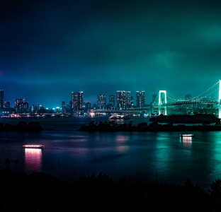

Histórias de viagens de nossos clientes. Inspire-se, encontre
roteiros e dicas! Qual seu próximo
destino?
Tokyo
Chegada
Nossa viagem começou no Aeroporto Internacional de Narita, localizado a cerca de 60 km de
Tóquio. Após desembarcar e fazer todos os procedimentos de imigração, fomos recebidos pela
equipe da Jornada Viagens, que nos conduziu até o nosso hotel.
Acomodação
Nos hospedamos no luxuoso Hotel Okura Tokyo, localizado no bairro de Toranomon. O hotel possui
uma vista incrível para a cidade, e oferece uma ampla gama de serviços, incluindo um spa, uma
piscina, restaurantes renomados e um lounge bar. Ficamos encantados com a atenção aos detalhes e
a qualidade do atendimento.

Vista da cidade da janela do hotel!
Explorando a cidade
Começamos nosso tour pela cidade com uma visita ao famoso Templo Sensoji, um dos mais antigos e
importantes templos budistas do Japão. Caminhamos pela rua comercial Nakamise, onde encontramos
muitas lojas vendendo artigos típicos japoneses, como quimonos, leques e comidas tradicionais.
Em seguida, visitamos o icônico cruzamento de Shibuya, um dos mais movimentados do mundo, onde
observamos a sincronia dos pedestres atravessando a rua.
No dia seguinte, visitamos o Parque Ueno, que abriga o Museu Nacional de Tóquio, onde pudemos
conhecer a história e cultura japonesa. À noite, fomos a um típico Izakaya, um bar japonês que
serve uma grande variedade de pratos e bebidas.
Compras
Tóquio é famosa por suas lojas de departamento e centros comerciais, e não podíamos deixar de
visitar algumas delas. Fomos ao famoso distrito comercial de Ginza, onde encontramos lojas das
marcas mais renomadas do mundo.
Também visitamos o distrito de Akihabara, conhecido como o centro de eletrônicos e
entretenimento de Tóquio, onde encontramos diversas lojas de jogos, eletrônicos e mangás.
Gastronomia
Não se pode falar do Japão sem mencionar sua gastronomia. Tivemos a oportunidade de experimentar
uma grande variedade de pratos típicos, como sushi, sashimi, ramen e tempura, além de doces
tradicionais como o mochi.
Concluindo...
Nossa viagem a Tóquio com a agência Jornada Viagens foi uma experiência inesquecível. A equipe da
agência cuidou de todos os detalhes, desde a reserva do hotel até a escolha dos melhores lugares
para visitar e comer. Recomendamos a Jornada Viagens para todos que desejam fazer uma viagem
incrível ao Japão.
Talvez você também goste destes posts...
Osaka
Osaka é uma cidade agitada e moderna no Japão. A cidade é famosa por sua
gastronomia deliciosa e por ser um excelente ponto de partida para explorar outras cidades
japonesas próximas.
Hiroshima é uma cidade histórica no Japão, conhecida por seu papel na
Segunda Guerra Mundial e por sua mensagem de paz. A cidade oferece uma combinação única de
memória histórica e cultura moderna.
Kyoto é uma cidade histórica no Japão, conhecida por seus templos
antigos, jardins tradicionais e cultura rica. A cidade oferece uma experiência única de imersão
na história e tradição japonesa.